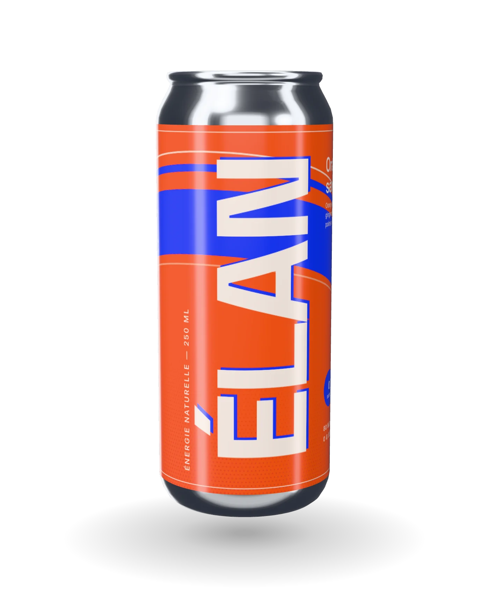
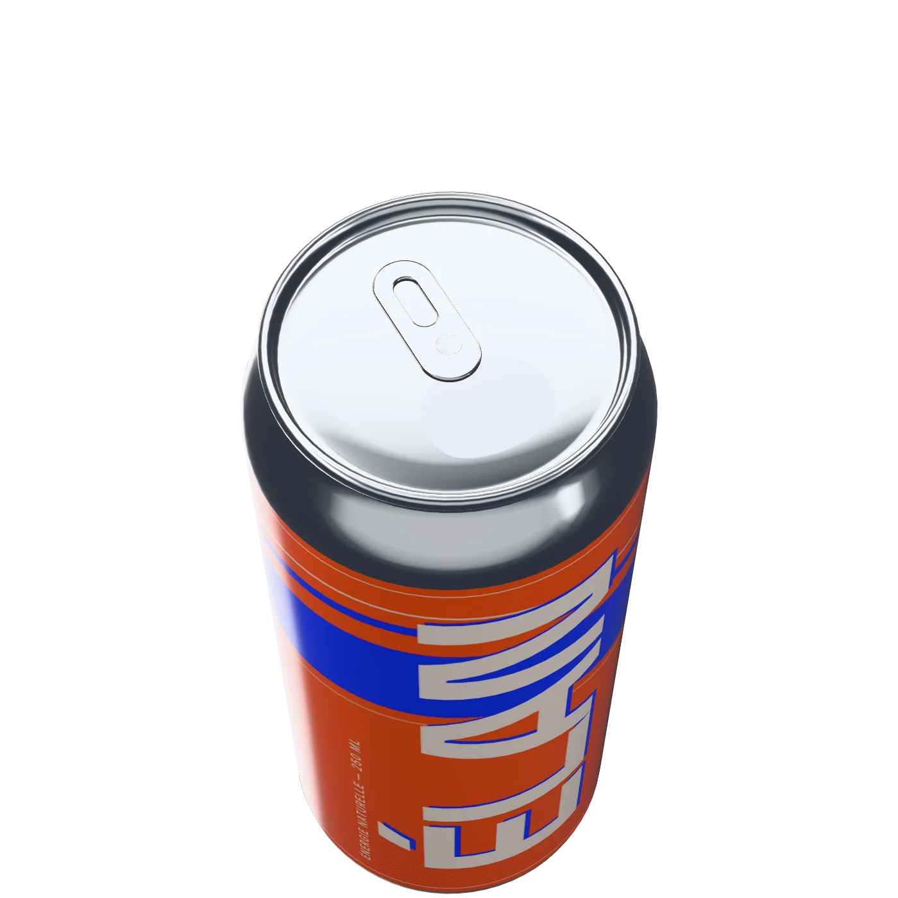
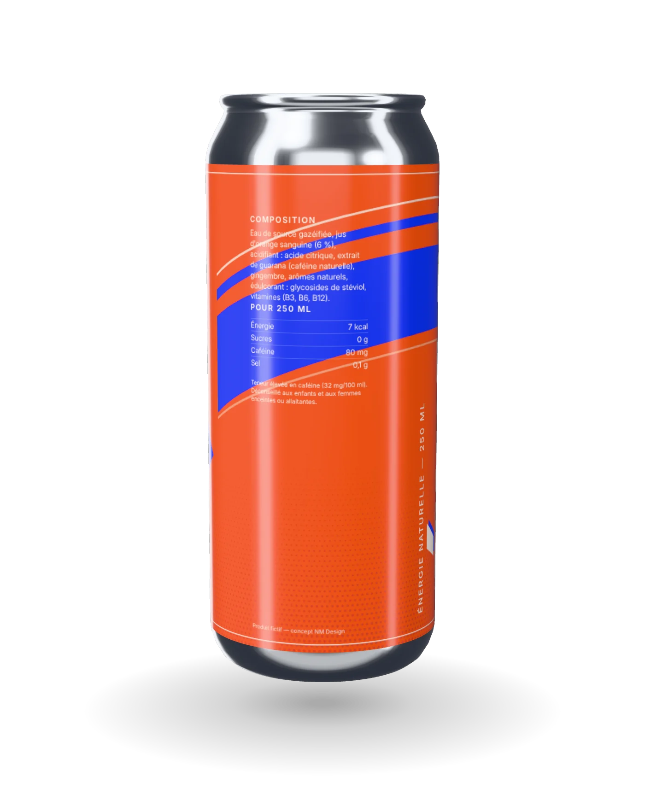

Énergie naturelle · 250 ml
L’énergie,
sans détour.
Caféine de guarana, zéro sucre ajouté, du vrai jus. Une canette qui dit tout ce qu’elle contient.

01 / 04
Orange sanguine
Orange sanguine, gingembre frais, une pointe de sel
- Caféine
- 80 mg
- Sucres ajoutés
- 0 g
- Énergie
- 7 kcal
Pas de taureau, pas de monstre, pas de promesse d’ailes. Juste ce qu’il faut pour tenir l’après-midi — et le dire clairement sur la canette.
- 80mgde caféine naturelle, issue du guarana
- 0gde sucres ajoutés, dans les quatre saveurs
- 6%de vrai jus de fruits pressé
La gamme
Quatre saveurs,
une même trajectoire.
Composition
Cinq ingrédients.
Aucun secret.
Teneur élevée en caféine (32 mg/100 ml). Déconseillé aux enfants et aux femmes enceintes ou allaitantes. Valeurs de concept, à titre d’illustration.
Le packaging
Une trajectoire,
pas un animal.
Les boissons énergisantes crient. ÉLAN trace une ligne : un arc bleu cobalt qui monte de bas en haut, comme une courbe d’effort. Le nom est posé à la verticale, lisible d’un seul coup d’œil dans un frigo.
L’aluminium reste visible au col et au fond. L’étiquette est vernie, la languette brossée. La couleur de fond change selon la saveur ; l’arc, lui, ne change jamais de forme.

